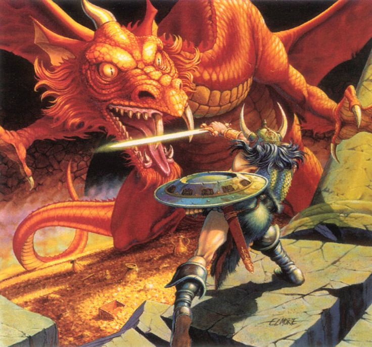

Why I Love D&D
I'm pretty sure most of us know what D&D is, but for those who don't, I will give a brief explanation of what and who invented it.
Introduction
Dungeons and Dragons was invented in 1974 by Gary Gygax and Dave Arneson, originally called Chainmail this would go to become Dungeons and Dragons 1st Edition. Despite both Gary Gygax and Dave Arneson created D&D, Gary Gygax is called the father of D&D. Thats the history, lets talk about what D&D is before we continue. D&D is considered a "TTRPG" which stands for "Table Top Role Playing Game", what does that mean? It boils down to creating a fictional character and embody the character during decisions and interactions.
The Meat
With all that said, why do I enjoy D&D? The reasons I enjoy D&D is for a few reasons, the Mechanics, the Role-play, and Friends. Let's start with the Mechanics, for me the Mechanics are complex yet simple enough that it allows for fun rule combinations and yet are easy enough to comprehend. For an example D&D is a number game, where you usually have a +1, or something like that, due to this people try and get the hights plus's possible. However the creators have made it to where similar plus's don't stack. I won't go into to much detail, less I bore you. Why did I put Role-playing on my list. Simple Its Fun! Let me clear something up real quick, when I say "Role-play" I don't mean something you do in the bedroom, I'm referring to embodying/Acting as someone else, making decisions they would make. To me it's therapeutic to act like someone else with my close friends, which leads me to my final point. Friends, everything is better with them